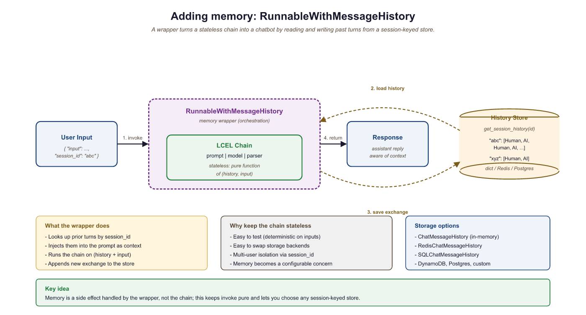
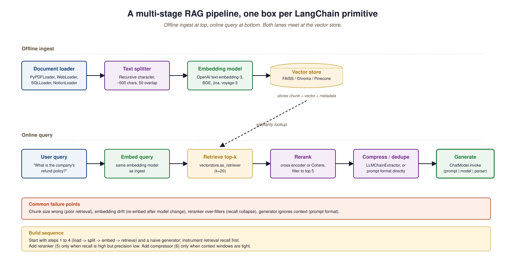

RAG libraries split into three layers: embedding generators, retrieval frameworks (the "Python glue" between embeddings, vector DBs, and LLMs), and the higher-level orchestration toolkits.
25.2.1 Embedding generators
- sentence-transformers (UKP Lab / Nils Reimers, 2019) is the canonical Python library for running open-source embedding models, wrapping any transformer-based encoder with a single
encode()method. Its objective is to make state-of-the-art dense retrieval as easy asSentenceTransformer(name).encode(texts)regardless of which encoder the model card prescribes, which matters when you want to swap embedding models without touching the rest of your code. The core concept is a uniform mean-pooling-and-normalize wrapper plus utilities for similarity, hard-negative mining, and fine-tuning. Pick sentence-transformers for any self-hosted embedding workflow; it is the foundation everything else builds on. - fastembed (Qdrant, 2024) is a drop-in replacement for sentence-transformers that runs popular embedding models via ONNX Runtime with 2-10x faster inference and no torch dependency. Useful when embeddings are on the hot path and you want lower latency without a GPU.
- infinity (Feil, 2024) is a high-throughput embedding server, often called "the vLLM for embeddings". Pick when you serve embeddings as a microservice and need batch / async throughput.
- FlagEmbedding (BGE) (BAAI, 2023) is BAAI's family of open-source embedding models (BGE-base, BGE-large, BGE-M3, BGE-reranker) plus the training scripts that produced them. Its objective is to provide an MIT-licensed open competitor to OpenAI's text-embedding-3 with comparable or better retrieval quality, which matters when you want to self-host without giving up the leaderboard. The core concept is contrastive learning with mined hard negatives at scale; BGE-M3 specifically supports dense, sparse, and ColBERT-style multi-vector retrieval in one model. Pick BGE as the open default in 2026, especially BGE-M3 when you want hybrid retrieval from one model.
- OpenAI embeddings API (OpenAI, 2022; v3 family 2024) exposes text-embedding-3-small (1536 dims, ~\$0.02/M tokens) and text-embedding-3-large (3072 dims). Its objective is to give you state-of-the-art embeddings without GPU infrastructure, which matters when your retrieval volume is too low to justify hosting a 7B-parameter encoder. The core concept is Matryoshka representation: the 3-large embedding can be truncated to fewer dimensions with minor quality loss, useful when your vector DB is dimension-billed. Pick OpenAI when you have low-to-medium retrieval volume; for high-volume retrieval, self-hosted BGE typically wins on cost.
- Cohere Embed v3 (Cohere, 2023) is Cohere's embedding API, distinguished by genuinely strong multilingual coverage across 100+ languages including low-resource ones. Its objective is to be the off-the-shelf default when your corpus or queries are non-English, which matters because most embedding models trained on English-heavy data degrade on French, German, Japanese, and beyond. The core concept is a single model that produces aligned cross-lingual vectors (a French query retrieves a Spanish document). Pick Cohere Embed v3 for multilingual RAG; for English-only, BGE-large and text-embedding-3-large are tighter competitors.
- Voyage AI (Voyage AI, 2023; Anthropic-recommended) is the embedding API that Anthropic publicly recommends pairing with Claude for RAG. Its objective is to provide high-quality, retrieval-tuned embeddings with domain-specific variants (voyage-finance, voyage-code, voyage-law), which matters when generic embeddings under-perform on your vertical. The core concept is in-domain pretraining plus query-document asymmetric encoding. Pick Voyage when you have a clear vertical (legal, finance, code) and want a managed solution Anthropic publicly endorses.
25.2.2 Retrieval frameworks
- LlamaIndex: see the second bullet. In 2026, LlamaIndex's tight RAG focus has overtaken LangChain as the right default for new RAG-specific projects; LangChain remains the better pick when you also need agent orchestration. The next bullets list both in detail and the right ordering of preference.
- LangChain (LangChain Inc., 2022) is the most-installed RAG and agent orchestration framework, providing abstractions for document loaders, text splitters, retrievers, chains, and agents. Its objective is to be the "glue" between every LLM provider, every vector DB, and every retrieval pattern so you can swap components by changing imports, which matters when you are exploring designs rather than committed to one. The core concept is the Runnable interface (LCEL, the LangChain Expression Language) that composes any LLM-touching step into pipelines via
|; LangGraph is the directed-graph successor for stateful agents. Pick LangChain when you want the deepest ecosystem and lots of working examples; avoid when you have settled on a single provider and the abstractions add more friction than convenience. - LlamaIndex (LlamaIndex Inc., 2022) is LangChain's main competitor, with a tighter focus on the RAG ingestion-and-query loop specifically. Its objective is to make complex document ingestion (PDFs, slides, spreadsheets, knowledge graphs) and multi-step retrieval the primary first-class abstractions, which matters when your bottleneck is data quality, not chain orchestration. The core concept is the Index hierarchy (VectorStoreIndex, KnowledgeGraphIndex, DocumentSummaryIndex) plus QueryEngine and Workflow primitives. Pick LlamaIndex for ingestion-heavy pipelines or graph-based RAG; pick LangChain for general LLM orchestration where retrieval is one part of many.
- Haystack (deepset, 2020) is the longest-running production-search-oriented RAG framework, designed around explicit Pipeline objects with typed inputs and outputs. Its objective is to make complex hybrid retrieval graphs (BM25 + dense + reranker + filter) inspectable and serializable, which matters when your retrieval logic is non-trivial and you need DAGs rather than chains. The core concept is the Pipeline DSL where every node has typed connections; the v2 rewrite cleaned this up considerably. Pick Haystack when you need complex retrieval graphs with hybrid search; for simpler RAG, LangChain or LlamaIndex are lighter weight.
- Semantic Kernel (Microsoft, 2023) is Microsoft's LLM orchestration framework, designed first for .NET and C# applications and second for Python. Its objective is to give Microsoft-stack developers (Azure, .NET, Office) a first-class agent framework that integrates with their existing app frameworks, which matters when you are building inside the Microsoft ecosystem. The core concept is "kernels", "skills", and "planners" that mirror function-calling agent patterns. Pick Semantic Kernel for .NET shops or tight Microsoft 365 integration; outside that environment, LangChain typically has more momentum.
- txtai and marker: alternative orchestration libraries when LangChain / LlamaIndex feel heavyweight.
25.2.2.5 Document parsing: where 80% of RAG bugs live
RAG quality depends more on the document-to-text layer than on the embedding model. The 2024-25 document-parsing stack that production teams converged on:
- unstructured.io: the broadest parser surface (PDF, HTML, DOCX, PPTX, EML, image OCR). Default for "I have a mix of file types".
- Docling (IBM Research, 2024): strong on PDF layout understanding and table extraction; competitive on technical documents.
- LlamaParse: managed parser tuned for LLM consumption; good when you want zero parser ops.
- marker: PDF-to-Markdown converter with strong math and table handling.
Pick one and standardize. The single most common production-RAG failure mode is "PDFs were parsed three different ways across the team's notebooks and the dataset drifted".
25.2.2.6 Late-interaction and hybrid retrieval
Two retrieval architectures sit alongside single-vector dense and deserve mention. Late interaction (ColBERT, ColBERTv2, PLAID from Stanford) stores per-token vectors and computes per-token MaxSim at query time, trading storage for higher recall. ColPali / ColQwen (2024-25) extend late interaction to vision-language models for document RAG with figures, the dominant 2024-25 trend in multimodal document search. For sparse + dense hybrid, SPLADE is the algorithm BGE-M3 wraps; naming it explicitly is helpful when reading retrieval papers.
25.2.3 Reranker libraries
- rerankers (AnswerDotAI, 2024) is a unified Python API across all the popular reranker models (cross-encoders, Cohere Rerank, ColBERT, FlashRank, T5-based rerankers). Its objective is to let you A/B-test rerankers by changing a string argument rather than rewriting your reranking code, which matters because picking a reranker is something you should benchmark, not commit to. The core concept is a thin abstraction that exposes
.rank(query, docs)regardless of backend. Pick rerankers as your default reranker entry point; once you have picked a winner, you can call the underlying library directly if you need more control. - Cohere Rerank (Cohere, 2023; v3 2024) is the managed cross-encoder reranking API that became the production default after early experiments showed it consistently lifted recall by 10-20 percentage points on top of dense retrieval. Its objective is to provide reranker quality without you having to host a cross-encoder model, which matters because cross-encoders are expensive per call and right-sizing the infrastructure is annoying. The core concept is a single API that takes a query and a candidate set, returning scored re-ordered results. Pick Cohere Rerank when you want managed simplicity; pick a self-hosted cross-encoder when latency and cost dominate.
- sentence-transformers cross-encoders (UKP Lab, 2019) ships open-source cross-encoder reranker models (ms-marco-MiniLM, ms-marco-electra-base) inside the sentence-transformers package. Its objective is to give you Cohere-Rerank-shaped quality at zero per-call cost if you can host the model, which matters when reranker volume would dominate your API bill. The core concept is a transformer that scores (query, doc) pairs end-to-end instead of producing embeddings separately. Pick self-hosted cross-encoders when latency is acceptable and volume is high; for low volume, Cohere Rerank is operationally simpler.
Sentence-transformers BGE or E5 for embedding, Qdrant or pgvector for storage, Cohere Rerank for reranking, LlamaIndex or LangChain for orchestration. Most production RAG systems in 2026 are a variant of this stack.
from sentence_transformers import SentenceTransformer
from qdrant_client import QdrantClient
import cohere
embedder = SentenceTransformer("BAAI/bge-large-en-v1.5")
qdrant = QdrantClient(host="localhost")
co = cohere.Client()
def rag(query: str, top_k: int = 5) -> str:
qvec = embedder.encode(query).tolist()
cands = qdrant.search(collection_name="docs", query_vector=qvec, limit=100)
docs = [c.payload["text"] for c in cands]
reranked = co.rerank(query=query, documents=docs, top_n=top_k, model="rerank-v3.5")
context = "\n".join(docs[r.index] for r in reranked.results)
# ... pass `context` to your LLM of choice
return contextThe pattern (embed query, ANN to top-100, rerank to top-5) is the production default. Swap Cohere Rerank for a self-hosted cross-encoder when latency or per-call cost dominate.
LangChain Memory and Conversation Management
Large language models are stateless: each API call starts from scratch with no recollection of previous turns. To build conversational applications, you must explicitly manage chat history and decide how much context to include in every request. LangChain provides several memory strategies, from simple buffer storage to intelligent summarization, along with a modern LCEL-native approach using RunnableWithMessageHistory.
1. The Memory Problem
For conversation memory theory and the taxonomy of buffer / summary / token-window / hybrid strategies, see Chapter 24.3 (Memory & Context Management) and Chapter 26.6 (Memory Architecture for Agents). This section shows the LangChain mappings.
LangChain offers two generations of memory tools. The legacy memory classes (such as ConversationBufferMemory) were designed for the old LLMChain API. The modern approach uses RunnableWithMessageHistory with LCEL chains. Both are covered here because legacy memory classes appear frequently in existing codebases and tutorials.
2. Legacy Memory Classes
ConversationBufferMemory
The simplest memory strategy stores every message in a growing list. ConversationBufferMemory keeps the complete conversation history and injects it into the prompt on every call. This works well for short conversations but will eventually exceed the model's context window.
This example demonstrates buffer memory with a legacy chain.
from langchain.chains import ConversationChain
from langchain_openai import ChatOpenAI
from langchain.memory import ConversationBufferMemory
model = ChatOpenAI(model="gpt-4o-mini", temperature=0)
memory = ConversationBufferMemory(return_messages=True)
conversation = ConversationChain(llm=model, memory=memory)
# First turn
response1 = conversation.invoke({"input": "My name is Alice."})
print(response1["response"])
# Second turn: the model remembers the name
response2 = conversation.invoke({"input": "What is my name?"})
print(response2["response"]) # "Your name is Alice."
# Inspect stored messages
print(memory.chat_memory.messages)ConversationSummaryMemory
For long conversations, storing every message becomes impractical. ConversationSummaryMemory uses the LLM itself to maintain a running summary of the conversation. Each time new messages are added, the summary is updated to incorporate the new information while keeping the token count bounded.
The following example shows how summary memory compresses a multi-turn conversation.
from langchain.memory import ConversationSummaryMemory
from langchain_openai import ChatOpenAI
model = ChatOpenAI(model="gpt-4o-mini", temperature=0)
memory = ConversationSummaryMemory(llm=model, return_messages=True)
# Simulate adding conversation turns
memory.save_context(
{"input": "I'm building a chatbot for customer support."},
{"output": "That sounds like a great project! What domain will it cover?"}
)
memory.save_context(
{"input": "It will handle billing questions for a SaaS product."},
{"output": "Got it. You'll want to integrate with your billing API."}
)
memory.save_context(
{"input": "We use Stripe for payments."},
{"output": "Stripe has excellent APIs. I can help you set up the integration."}
)
# The memory stores a summary, not individual messages
print(memory.load_memory_variables({}))
# Output: a condensed summary mentioning the chatbot, billing, SaaS, and StripeSummary memory incurs an extra LLM call each time the summary is updated. For production systems, consider updating the summary only every N turns or when the buffer exceeds a token threshold rather than on every single turn.
ConversationTokenBufferMemory
A practical middle ground between full buffer and summary: ConversationTokenBufferMemory keeps recent messages up to a specified token limit. When the limit is exceeded, the oldest messages are dropped. This gives the model a sliding window of recent context without any summarization cost.
from langchain.memory import ConversationTokenBufferMemory
from langchain_openai import ChatOpenAI
model = ChatOpenAI(model="gpt-4o-mini")
memory = ConversationTokenBufferMemory(
llm=model,
max_token_limit=200, # Keep only the most recent ~200 tokens
return_messages=True
)
# Add several turns
for i in range(10):
memory.save_context(
{"input": f"Question {i}: Tell me about topic {i}."},
{"output": f"Here is information about topic {i}. " * 5}
)
# Only the most recent messages (within 200 tokens) are retained
messages = memory.load_memory_variables({})
print(f"Messages in memory: {len(messages['history'])}")The memory classes shown above (ConversationBufferMemory, ConversationSummaryMemory, ConversationTokenBufferMemory) are part of LangChain's legacy API. They work with ConversationChain and LLMChain. For new projects using LCEL, use RunnableWithMessageHistory instead (covered next).
3. Modern Memory with LCEL
The recommended approach for managing conversation history in LCEL chains is RunnableWithMessageHistory. This wrapper adds message history to any runnable by looking up (or creating) a history object keyed by a session ID. It is more flexible than legacy memory because it works with any LCEL chain and supports pluggable storage backends.
This example builds a conversational chain with LCEL and in-memory history storage.
from langchain_openai import ChatOpenAI
from langchain_core.prompts import ChatPromptTemplate, MessagesPlaceholder
from langchain_core.output_parsers import StrOutputParser
from langchain_core.runnables.history import RunnableWithMessageHistory
from langchain_community.chat_message_histories import ChatMessageHistory
# In-memory store: maps session_id to ChatMessageHistory
store = {}
def get_session_history(session_id: str) -> ChatMessageHistory:
if session_id not in store:
store[session_id] = ChatMessageHistory()
return store[session_id]
# Build the chain with a MessagesPlaceholder for history
prompt = ChatPromptTemplate.from_messages([
("system", "You are a helpful assistant."),
MessagesPlaceholder(variable_name="history"),
("human", "{input}")
])
model = ChatOpenAI(model="gpt-4o-mini", temperature=0)
chain = prompt | model | StrOutputParser()
# Wrap with message history
conversational_chain = RunnableWithMessageHistory(
chain,
get_session_history,
input_messages_key="input",
history_messages_key="history"
)
# Use session IDs to maintain separate conversations
config = {"configurable": {"session_id": "user-123"}}
response1 = conversational_chain.invoke(
{"input": "My favorite language is Rust."},
config=config
)
print(response1)
response2 = conversational_chain.invoke(
{"input": "What is my favorite language?"},
config=config
)
print(response2) # "Your favorite language is Rust."
RunnableWithMessageHistory wrapper intercepts each invocation, loads prior messages from the history store, injects them into the prompt via MessagesPlaceholder, and saves the new exchange after the chain completes.4. Persistent Chat History Stores
The in-memory ChatMessageHistory is fine for development and testing, but production applications need durable storage. LangChain's community package provides integrations for Redis, PostgreSQL, MongoDB, DynamoDB, and many other backends. Each integration implements the same BaseChatMessageHistory interface, so swapping backends requires changing only the get_session_history function.
This example shows how to use Redis as a persistent history store.
from langchain_community.chat_message_histories import RedisChatMessageHistory
def get_session_history(session_id: str):
return RedisChatMessageHistory(
session_id=session_id,
url="redis://localhost:6379/0",
ttl=3600 # Expire conversations after 1 hour
)
# The rest of the chain setup is identical to the in-memory example.
# Just pass this function to RunnableWithMessageHistory.5. Strategies for Long Conversations
As conversations grow, you must choose a strategy for keeping the prompt within the model's context window. The table below summarizes the main approaches and their trade-offs.
| Strategy | Mechanism | Pros | Cons |
|---|---|---|---|
| Full buffer | Keep all messages | Complete context, no information loss | Hits context limit on long conversations |
| Token buffer | Drop oldest messages beyond token limit | Predictable token usage, no extra LLM calls | Loses early context abruptly |
| Summary | LLM summarizes older messages | Retains key facts from entire conversation | Extra LLM calls, potential summary drift |
| Summary + buffer | Summary of old messages, full recent messages | Best of both: context and recency | Most complex to implement |
For LCEL-based chains, you can implement any of these strategies by customizing the function that loads and trims history before injection. The following example shows a simple token-trimming approach.
from langchain_core.messages import trim_messages
# Trim history to fit within a token budget before passing to the model
trimmer = trim_messages(
max_tokens=1000,
strategy="last", # Keep the most recent messages
token_counter=model, # Use the model's tokenizer for accurate counts
include_system=True, # Always keep the system message
allow_partial=False # Don't cut messages in half
)
# Insert the trimmer into the chain
chain_with_trimming = (
{"history": trimmer, "input": lambda x: x["input"]}
| prompt
| model
| StrOutputParser()
)For new LCEL-based projects, use RunnableWithMessageHistory with a pluggable history store and trim_messages for context window management. Legacy memory classes are still useful for understanding older codebases but should not be the foundation of new applications.
LangChain Document Loaders and Retrievers
Retrieval-Augmented Generation (RAG) is one of the most practical LLM patterns: instead of relying solely on the model's training data, you retrieve relevant documents at query time and include them in the prompt. LangChain provides a complete pipeline for this workflow: document loaders ingest data from diverse sources, text splitters break documents into chunks suitable for embedding, and retrievers find the most relevant chunks for a given query.
1. Document Loaders
A document loader reads data from a source and returns a list of Document objects. Each Document has two attributes: page_content (the text) and metadata (a dictionary of source information such as file name, page number, or URL). LangChain provides loaders for hundreds of formats and sources. The most commonly used ones cover PDFs, web pages, CSV files, and directories of files.
This example loads documents from three different sources: a PDF file, a web page, and a CSV file.
from langchain_community.document_loaders import (
PyPDFLoader,
WebBaseLoader,
CSVLoader,
DirectoryLoader
)
# Load a PDF (one Document per page)
pdf_loader = PyPDFLoader("reports/annual_report.pdf")
pdf_docs = pdf_loader.load()
print(f"PDF pages: {len(pdf_docs)}")
print(f"First page metadata: {pdf_docs[0].metadata}")
# {'source': 'reports/annual_report.pdf', 'page': 0}
# Load a web page
web_loader = WebBaseLoader("https://en.wikipedia.org/wiki/Transformer_(deep_learning_architecture)")
web_docs = web_loader.load()
print(f"Web doc length: {len(web_docs[0].page_content)} characters")
# Load a CSV (one Document per row)
csv_loader = CSVLoader("data/products.csv", source_column="product_id")
csv_docs = csv_loader.load()
print(f"CSV rows loaded: {len(csv_docs)}")
print(f"First row: {csv_docs[0].page_content[:100]}")For large directories, use DirectoryLoader with glob patterns: DirectoryLoader("docs/", glob="**/*.md"). You can also pass show_progress=True to display a progress bar during loading. For PDFs requiring OCR, consider UnstructuredPDFLoader with the strategy="ocr_only" option.
Every loader returns the same Document type, which means downstream components (splitters, embeddings, vector stores) work identically regardless of the original data source. You can also combine documents from multiple loaders before splitting.
2. Text Splitters
Raw documents are usually too long to embed as single chunks or to fit in a prompt alongside other context. Text splitters break documents into smaller, overlapping pieces. The overlap ensures that information spanning a chunk boundary is not lost. Choosing the right splitter and chunk size significantly affects retrieval quality.
RecursiveCharacterTextSplitter
The most versatile splitter, RecursiveCharacterTextSplitter, tries to split on natural boundaries (paragraphs, then sentences, then words) before falling back to character-level splitting. It accepts a list of separator characters and tries them in order, preferring splits that produce the most semantically coherent chunks.
from langchain_text_splitters import RecursiveCharacterTextSplitter
splitter = RecursiveCharacterTextSplitter(
chunk_size=500, # Target chunk size in characters
chunk_overlap=50, # Overlap between consecutive chunks
separators=["\n\n", "\n", ". ", " ", ""], # Try these in order
length_function=len
)
# Split a single document
chunks = splitter.split_documents(pdf_docs)
print(f"Original pages: {len(pdf_docs)}, Chunks: {len(chunks)}")
print(f"Chunk 0 length: {len(chunks[0].page_content)} chars")
print(f"Chunk 0 metadata: {chunks[0].metadata}")
# Metadata is preserved from the original documentChoosing Chunk Size
See Chapter 23.1 (RAG Architecture & Fundamentals) for chunk-size tradeoffs. Start at 500-1000 characters with 10-20% overlap and evaluate retrieval quality on representative queries.
Specialized Splitters
LangChain provides splitters optimized for specific content types. These are more effective than generic character splitting when working with structured or formatted content.
from langchain_text_splitters import (
Language,
RecursiveCharacterTextSplitter,
MarkdownHeaderTextSplitter,
HTMLHeaderTextSplitter
)
# Split Python code along function and class boundaries
python_splitter = RecursiveCharacterTextSplitter.from_language(
language=Language.PYTHON,
chunk_size=1000,
chunk_overlap=100
)
code = """
class DataProcessor:
def __init__(self, config):
self.config = config
def load_data(self, path):
with open(path) as f:
return json.load(f)
def process(self, data):
results = []
for item in data:
results.append(self.transform(item))
return results
"""
code_chunks = python_splitter.split_text(code)
print(f"Code chunks: {len(code_chunks)}")
# Split Markdown by headers (preserves document structure)
md_splitter = MarkdownHeaderTextSplitter(
headers_to_split_on=[
("#", "h1"),
("##", "h2"),
("###", "h3"),
]
)
md_text = "# Intro\nSome text.\n## Methods\nMore text.\n### Details\nFine details."
md_chunks = md_splitter.split_text(md_text)
for chunk in md_chunks:
print(chunk.metadata, chunk.page_content[:50])
3. Vector Store Retrievers
After splitting, chunks are embedded into vectors and stored in a vector database. At query time, the user's question is embedded using the same model, and the vector store returns the chunks whose embeddings are most similar. LangChain wraps this workflow in a retriever interface that any LCEL chain can consume.
This example creates a vector store from document chunks using FAISS (a fast, in-memory similarity search library) and then queries it.
from langchain_openai import OpenAIEmbeddings
from langchain_community.vectorstores import FAISS
from langchain_text_splitters import RecursiveCharacterTextSplitter
from langchain_community.document_loaders import WebBaseLoader
# Load and split
loader = WebBaseLoader("https://python.langchain.com/docs/get_started/introduction")
docs = loader.load()
splitter = RecursiveCharacterTextSplitter(chunk_size=500, chunk_overlap=50)
chunks = splitter.split_documents(docs)
# Embed and store
embeddings = OpenAIEmbeddings(model="text-embedding-3-small")
vectorstore = FAISS.from_documents(chunks, embeddings)
# Convert to a retriever (returns top-k documents)
retriever = vectorstore.as_retriever(
search_type="similarity",
search_kwargs={"k": 4}
)
# Query the retriever
results = retriever.invoke("What is LangChain?")
for doc in results:
print(doc.page_content[:100], "...")
print(f" Source: {doc.metadata.get('source', 'unknown')}\n")FAISS is excellent for prototyping, but for production workloads consider a managed vector database such as Pinecone, Weaviate, Qdrant, or Chroma. Each has a LangChain integration that follows the same VectorStore interface, making migration straightforward.
4. Ensemble Retrievers
See Chapter 23 (RAG) for hybrid search and the reciprocal rank fusion (RRF) rationale. EnsembleRetriever is the LangChain implementation, commonly used to combine a dense vector retriever (semantic similarity) with a sparse BM25 retriever (keyword matching).
from langchain.retrievers import EnsembleRetriever
from langchain_community.retrievers import BM25Retriever
# Dense retriever (from vectorstore, as above)
dense_retriever = vectorstore.as_retriever(search_kwargs={"k": 4})
# Sparse retriever (BM25 keyword matching)
bm25_retriever = BM25Retriever.from_documents(chunks)
bm25_retriever.k = 4
# Combine with equal weights
ensemble = EnsembleRetriever(
retrievers=[dense_retriever, bm25_retriever],
weights=[0.5, 0.5]
)
results = ensemble.invoke("How do I install LangChain?")
for doc in results:
print(doc.page_content[:80])5. Contextual Compression
Retrieved chunks often contain irrelevant text alongside the useful passages. Contextual compression uses an LLM (or a smaller model) to extract only the relevant portions of each retrieved document before passing them to the final generation step. This reduces noise in the prompt and improves answer quality.
The following example wraps a retriever with a compressor that extracts only the relevant sentences from each chunk.
from langchain.retrievers import ContextualCompressionRetriever
from langchain.retrievers.document_compressors import LLMChainExtractor
from langchain_openai import ChatOpenAI
compressor_llm = ChatOpenAI(model="gpt-4o-mini", temperature=0)
compressor = LLMChainExtractor.from_llm(compressor_llm)
compressed_retriever = ContextualCompressionRetriever(
base_compressor=compressor,
base_retriever=retriever # The FAISS retriever from earlier
)
results = compressed_retriever.invoke("What are LangChain's core components?")
for doc in results:
# Each document now contains only the relevant extracted text
print(doc.page_content)
print("---")Contextual compression adds an LLM call per retrieved document, which increases latency and cost. For high-throughput applications, consider using a cross-encoder reranker (such as Cohere Rerank or a local cross-encoder model) instead, which scores relevance without generating text.
6. Putting It All Together: A Complete RAG Chain
The following example assembles a full RAG pipeline using LCEL: load documents, split them, store embeddings, retrieve relevant chunks, and generate an answer.

from langchain_openai import ChatOpenAI, OpenAIEmbeddings
from langchain_core.prompts import ChatPromptTemplate
from langchain_core.output_parsers import StrOutputParser
from langchain_core.runnables import RunnablePassthrough
from langchain_community.vectorstores import FAISS
from langchain_text_splitters import RecursiveCharacterTextSplitter
from langchain_community.document_loaders import PyPDFLoader
# 1. Load and split
docs = PyPDFLoader("handbook.pdf").load()
chunks = RecursiveCharacterTextSplitter(
chunk_size=800, chunk_overlap=100
).split_documents(docs)
# 2. Embed and store
vectorstore = FAISS.from_documents(chunks, OpenAIEmbeddings())
retriever = vectorstore.as_retriever(search_kwargs={"k": 5})
# 3. Define the RAG prompt
rag_prompt = ChatPromptTemplate.from_template("""
Answer the question based only on the following context.
If the context does not contain enough information, say so.
Context:
{context}
Question: {question}
Answer:""")
# 4. Helper to format retrieved documents
def format_docs(docs):
return "\n\n".join(doc.page_content for doc in docs)
# 5. Assemble the LCEL chain
rag_chain = (
{"context": retriever | format_docs, "question": RunnablePassthrough()}
| rag_prompt
| ChatOpenAI(model="gpt-4o", temperature=0)
| StrOutputParser()
)
# 6. Query
answer = rag_chain.invoke("What is the company's vacation policy?")
print(answer)The RAG pipeline in LangChain follows a clear pattern: load, split, embed, retrieve, generate. Each step is handled by a pluggable component. Use RecursiveCharacterTextSplitter as your default splitter, experiment with chunk sizes between 500 and 1000 characters, and consider ensemble retrieval or contextual compression when basic similarity search is not precise enough.
Orchestration Frameworks: LangChain, LlamaIndex, Haystack, DSPy
Orchestration frameworks sit between your application logic and the LLM API, providing abstractions for prompt management, chaining, retrieval, and tool integration. The four dominant frameworks each take a fundamentally different design approach: LangChain emphasizes composable components, LlamaIndex focuses on data and retrieval, Haystack uses a pipeline architecture, and DSPy replaces prompts with optimizable programs. Understanding these differences is essential for making the right choice.
1. Framework Overview and Design Philosophies
Each orchestration framework reflects a distinct philosophy about how developers should interact with LLMs. These philosophical differences manifest in API design, abstraction levels, and the types of applications each framework makes easy or difficult to build.
LangChain follows a component-based philosophy with hundreds of integrations (LLM providers, vector stores, document loaders, tools). See D.1 for the Runnable / LCEL fundamentals.
LlamaIndex was built with a data-first philosophy. It excels at ingesting, indexing, and retrieving documents for RAG applications. While it has expanded to support general orchestration, its core strength remains the retrieval pipeline: loading documents from dozens of sources, chunking them with configurable strategies, embedding them, and querying them with sophisticated retrieval methods.
Haystack uses a directed acyclic graph (DAG) pipeline architecture inherited from its origins as a search framework (by deepset). Each component in a Haystack pipeline has typed inputs and outputs, and the framework validates the pipeline graph at construction time. This strictness catches errors early and makes pipelines easier to reason about, at the cost of some flexibility.
DSPy takes the most radical approach: it treats LLM interactions as differentiable programs rather than prompt templates. Instead of hand-crafting prompts, you define input/output signatures and let DSPy's optimizers (teleprompters) find effective prompting strategies automatically. This approach produces more robust results but requires a fundamentally different mental model.
2. Feature Comparison
The following table compares the four frameworks across key dimensions. Scores reflect the state of each framework as of early 2026.
| Feature | LangChain | LlamaIndex | Haystack | DSPy |
|---|---|---|---|---|
| Primary focus | General orchestration | RAG and data retrieval | Pipeline-based NLP | Programmatic prompting |
| GitHub stars (approx.) | 100k+ | 38k+ | 18k+ | 20k+ |
| Language support | Python, TypeScript | Python, TypeScript | Python | Python |
| LLM provider integrations | 80+ | 40+ | 20+ | 15+ |
| Vector store integrations | 50+ | 40+ | 15+ | 5+ |
| Document loaders | 100+ | 160+ | 30+ | Minimal |
| Streaming support | Full | Full | Full | Limited |
| Async support | Full | Full | Full | Partial |
| Type safety | Moderate (Pydantic) | Moderate (Pydantic) | Strong (typed I/O) | Strong (signatures) |
| Learning curve | Moderate to steep | Moderate | Moderate | Steep |
| Commercial offering | LangSmith (observability) | LlamaCloud (managed RAG) | deepset Cloud | None |
| License | MIT | MIT | Apache 2.0 | MIT |
3. Code Complexity Comparison
The best way to understand the practical differences between frameworks is to implement the same task in each. The following examples all implement a basic RAG pipeline that loads a document, creates embeddings, stores them in a vector database, and answers questions using retrieved context.
3.1 LangChain
See D.3 for the LangChain RAG pipeline; this section assumes you have read it and contrasts the equivalent flows in LlamaIndex, Haystack, and DSPy.
3.2 LlamaIndex
LlamaIndex's approach is more declarative and data-centric. The framework handles chunking, embedding, and retrieval with sensible defaults, requiring less boilerplate for standard RAG.
from llama_index.core import VectorStoreIndex, SimpleDirectoryReader
from llama_index.llms.openai import OpenAI
# Load documents (auto-detects file types)
documents = SimpleDirectoryReader("./data").load_data()
# Create index (handles chunking, embedding, and storage)
index = VectorStoreIndex.from_documents(documents)
# Query with built-in retrieval
query_engine = index.as_query_engine(
llm=OpenAI(model="gpt-4o"),
similarity_top_k=3,
)
response = query_engine.query("What is PagedAttention?")3.3 Haystack
Haystack's pipeline approach makes the data flow explicit. Each component declares its inputs and outputs, and the framework validates that connections are type-compatible.
from haystack import Pipeline
from haystack.components.converters import TextFileToDocument
from haystack.components.preprocessors import DocumentSplitter
from haystack.components.embedders import OpenAIDocumentEmbedder, OpenAITextEmbedder
from haystack.components.writers import DocumentWriter
from haystack.components.retrievers.in_memory import InMemoryEmbeddingRetriever
from haystack.components.builders import PromptBuilder
from haystack.components.generators import OpenAIGenerator
from haystack.document_stores.in_memory import InMemoryDocumentStore
doc_store = InMemoryDocumentStore()
# Indexing pipeline
indexing = Pipeline()
indexing.add_component("converter", TextFileToDocument())
indexing.add_component("splitter", DocumentSplitter(split_by="sentence", split_length=3))
indexing.add_component("embedder", OpenAIDocumentEmbedder())
indexing.add_component("writer", DocumentWriter(document_store=doc_store))
indexing.connect("converter", "splitter")
indexing.connect("splitter", "embedder")
indexing.connect("embedder", "writer")
indexing.run({"converter": {"sources": ["knowledge_base.txt"]}})
# Query pipeline
template = "Answer based on context:\n{% for d in documents %}{{ d.content }}\n{% endfor %}\nQuestion: {{ question }}"
query_pipe = Pipeline()
query_pipe.add_component("embedder", OpenAITextEmbedder())
query_pipe.add_component("retriever", InMemoryEmbeddingRetriever(document_store=doc_store, top_k=3))
query_pipe.add_component("prompt", PromptBuilder(template=template))
query_pipe.add_component("llm", OpenAIGenerator(model="gpt-4o"))
query_pipe.connect("embedder.embedding", "retriever.query_embedding")
query_pipe.connect("retriever", "prompt.documents")
query_pipe.connect("prompt", "llm")
result = query_pipe.run({
"embedder": {"text": "What is PagedAttention?"},
"prompt": {"question": "What is PagedAttention?"},
})3.4 DSPy
DSPy replaces prompt engineering with programming. You define what the LLM should do (via signatures), and DSPy optimizes how it does it. This code is the shortest, but understanding the framework requires grasping the signature and module abstractions.
import dspy
# Configure LLM and retriever
lm = dspy.LM("openai/gpt-4o")
dspy.configure(lm=lm)
# Define the RAG module
class RAG(dspy.Module):
def __init__(self):
self.retrieve = dspy.Retrieve(k=3)
self.generate = dspy.ChainOfThought("context, question -> answer")
def forward(self, question):
context = self.retrieve(question).passages
return self.generate(context=context, question=question)
rag = RAG()
result = rag(question="What is PagedAttention?")Lines of code is not the right metric for comparison. LlamaIndex and DSPy achieve brevity by hiding complexity behind high-level abstractions. LangChain and Haystack expose more of the pipeline, giving you finer control. The right choice depends on whether you need that control. If your RAG pipeline uses standard settings, LlamaIndex's defaults save time. If you need custom chunking, reranking, and hybrid search, LangChain or Haystack give you the knobs to turn.
4. Strengths and Weaknesses
Beyond feature lists and code comparisons, each framework has characteristic strengths and weaknesses that emerge during real-world usage. The following assessment is based on production experience and community feedback.
4.1 LangChain
Strengths: Unmatched integration breadth; large community means abundant examples; LCEL provides a powerful composition model; TypeScript support for full-stack teams; LangSmith provides excellent observability.
Weaknesses: Large API surface creates confusion (multiple ways to do the same thing); frequent breaking changes in earlier versions eroded trust (stabilized in v0.2+); abstraction overhead adds latency; debugging LCEL chains can be opaque without LangSmith.
4.2 LlamaIndex
Strengths: Best-in-class document ingestion and retrieval; excellent defaults for RAG; strong TypeScript support; LlamaCloud provides managed infrastructure; property graph index for knowledge graph use cases.
Weaknesses: Less suited for non-RAG workflows; agent capabilities are less mature than LangGraph; some advanced features require LlamaCloud (paid); can be "magic" in ways that make debugging difficult.
4.3 Haystack
Strengths: Pipeline validation catches errors at build time; clean typed component model; strong enterprise backing from deepset; excellent documentation; modular design avoids bloated dependencies; mature pipeline serialization (YAML export/import).
Weaknesses: Smaller community means fewer third-party examples; fewer integrations than LangChain; pipeline syntax is verbose for simple use cases; no TypeScript SDK.
4.4 DSPy
Strengths: Eliminates prompt engineering through optimization; produces more robust prompts that generalize better; signature-based approach is concise and testable; strong academic foundation from Stanford NLP.
Weaknesses: Steep learning curve; requires a different mental model than traditional prompt engineering; smaller ecosystem and fewer integrations; optimization requires labeled examples; limited production tooling and observability.
5. Production Readiness Comparison
Moving from a prototype to production introduces requirements around reliability, observability, security, and operational management. The following table assesses each framework's production readiness.
| Production Feature | LangChain | LlamaIndex | Haystack | DSPy |
|---|---|---|---|---|
| Error handling / retries | Built-in (Runnable) | Built-in | Pipeline-level | Basic |
| Streaming responses | Full support | Full support | Full support | Limited |
| Observability integration | LangSmith, callbacks | LlamaTrace, callbacks | OpenTelemetry native | Basic logging |
| Caching | Multiple backends | Built-in | Component-level | None built-in |
| Rate limiting | Provider-level | Provider-level | Custom component | Manual |
| Pipeline serialization | JSON export | JSON/dict export | YAML native | Module save/load |
| Deployment guides | Extensive | Good | Extensive | Minimal |
| Security features | Input sanitization | Input validation | Input validation | Minimal |
6. Decision Table: Which Framework Should You Choose?
The following decision table maps common project scenarios to framework recommendations. Each row describes a situation and identifies the best-fit framework along with an alternative.
| If your project needs... | Best Fit | Runner-Up | Rationale |
|---|---|---|---|
| Maximum integration options | LangChain | LlamaIndex | Largest integration ecosystem by a wide margin |
| RAG with complex retrieval | LlamaIndex | Haystack | Purpose-built for data ingestion and retrieval |
| Strict pipeline validation | Haystack | LangChain | Typed I/O and build-time validation prevent runtime errors |
| Automated prompt optimization | DSPy | None comparable | Only framework with built-in prompt optimization |
| TypeScript full-stack app | LangChain | LlamaIndex | Most mature TypeScript SDK |
| Enterprise with compliance needs | Haystack | LangChain | deepset Cloud offers enterprise support; Apache 2.0 license |
| Quick prototype (few days) | LlamaIndex | LangChain | Sensible defaults minimize boilerplate for RAG use cases |
| Research with novel prompting | DSPy | LangChain | Programmatic approach enables systematic prompt exploration |
| Agent-heavy workflows | LangChain + LangGraph | LlamaIndex | LangGraph (covered in Section 30.2) provides best agent orchestration |
These frameworks are not mutually exclusive. Many production systems combine LlamaIndex for retrieval with LangChain for orchestration, or use DSPy for prompt optimization during development and then export the optimized prompts into a LangChain or Haystack pipeline for production. Choose a primary framework for your core workflow, then integrate specialized tools where they add value.
Summary
LangChain offers the broadest ecosystem and is the default choice when you need maximum flexibility and integrations. LlamaIndex is the strongest choice for RAG-centric applications where data ingestion and retrieval quality are paramount. Haystack provides the most disciplined engineering experience with its validated pipeline architecture, making it well suited for enterprise deployments. DSPy offers a fundamentally different (and often superior) approach to prompt engineering through optimization, but requires the steepest learning curve and has the least production tooling. Apply the decision framework from this appendix with your project-specific weights to make the final call.
LlamaIndex Deep Dive
LlamaIndex is the data-first cousin of LangChain. Where LangChain treats document loading as one component class among many, LlamaIndex treats the pipeline of "messy bytes on disk to retrieval-ready chunks to a working query engine" as the primary product, and everything else sits around that core. If your application starts with a corpus, LlamaIndex usually gets you to a working prototype in fewer lines than any other framework.
This section walks the stack top to bottom: 160+ data connectors, index types and when to pick each, query engines and the sub-question pattern, LlamaParse and LlamaCloud, and named production cases. It complements Section 25.2 (Libraries & Frameworks)'s cross-framework comparison and Section 16.2 (Libraries & Frameworks)'s LangChain RAG walkthrough; pair with Chapter 23 (RAG Architecture) for the conceptual treatment.
LlamaIndex is best understood as three layers. The ingestion layer (LlamaHub connectors plus LlamaParse) turns arbitrary sources into Document objects. The indexing layer turns documents into one of seven index types, each optimized for a different query shape. The query layer wraps an index in a QueryEngine or a higher-level agent. Picking the right index is the decision that makes or breaks an application; the rest of the stack is plumbing.
1. Ingestion: LlamaHub and the 160+ Connectors
LlamaHub (llamahub.ai) lists more than 160 readers covering local files (PDF, DOCX, EPUB, PPTX, Markdown, CSV), SaaS APIs (Notion, Confluence, Google Drive, SharePoint, Slack, Jira, Salesforce, HubSpot), databases (Postgres, MongoDB, BigQuery, Snowflake), web sources (Wikipedia, ArXiv, scrapers, sitemap crawlers), and a long tail of community readers for obscure formats.
The common interface is BaseReader.load_data() returning list[Document]; every reader conforms, so swapping an ingestion source is a one-line change. LangChain's loaders are also unified but show more cross-loader metadata variance; LlamaIndex pays the consistency cost up front.
from llama_index.core import VectorStoreIndex
from llama_index.readers.notion import NotionPageReader
from llama_index.readers.confluence import ConfluenceReader
# Swap sources without touching downstream code
docs = NotionPageReader(integration_token=token).load_data(page_ids=["..."])
# docs = ConfluenceReader(base_url="...", user_name="...", api_token="...").load_data(space_key="ENG")
index = VectorStoreIndex.from_documents(docs)
query_engine = index.as_query_engine()
print(query_engine.query("What is our incident-response SLA?"))SimpleDirectoryReader("./data") auto-detects file types based on extension and dispatches to the right reader. For a quick prototype against a folder of mixed PDFs, Markdown, and CSVs, this one-liner replaces what would be three explicit loader instantiations in LangChain.
2. LlamaParse: The Document Parser That Made the Stack Famous
The original ingestion layer punted on the hardest RAG problem: parsing complex PDFs. A 200-page financial report with multi-column layouts, footnotes, and tables defeats pypdf, and the resulting chunks are unusable for retrieval. LlamaParse (launched 2024) uses a vision-language model to read pages directly, preserving table structure and emitting Markdown or structured JSON.
The free tier (1,000 pages per day) is enough for prototyping. The integration is one line: LlamaParse(result_type="markdown").load_data("report.pdf"). The 2024-2025 evaluation work from the LlamaIndex team showed double-digit accuracy gains on FinanceBench and ContractNLI over pypdf-based baselines.
3. Index Types: The Decision That Sets Performance
LlamaIndex offers seven index types, each tuned for a different query pattern. VectorStoreIndex is the right default 80% of the time; the others exist for good reasons.
| Index Type | Best For | Query Cost | Notes |
|---|---|---|---|
VectorStoreIndex | Semantic Q&A over chunks | O(log n) with ANN | The default; pairs with any vector DB |
SummaryIndex | Whole-corpus summaries | O(n) (reads every node) | Useful when "the answer is everywhere" |
TreeIndex | Hierarchical synthesis | O(log n) traversal | Recursive summarization of clusters |
KeywordTableIndex | Sparse keyword lookup | O(1) per keyword | BM25-like; combine with vector for hybrid |
KnowledgeGraphIndex | Entity-relationship queries | Graph traversal | Auto-extracts triplets via LLM |
PropertyGraphIndex | Schema-driven KG (2024+) | Cypher / graph query | Successor to KGIndex; richer metadata |
DocumentSummaryIndex | Per-document summaries | O(log n) | Two-stage: summary then chunk retrieval |
PropertyGraphIndex (2024) generalizes the older KnowledgeGraphIndex by attaching arbitrary properties to nodes and edges and supporting both schema-guided and schema-free extraction. For domains where relationships matter (financial entity graphs, medical knowledge bases, supply-chain queries), it is the right primitive.
4. Query Engines and Sub-Question Decomposition
An index becomes useful inside a QueryEngine. The base case index.as_query_engine() retrieves top-k chunks and synthesizes an answer. The interesting engines are higher-level: RouterQueryEngine dispatches to sub-engines based on an LLM classification, SubQuestionQueryEngine decomposes compound queries and aggregates, and SQLAutoVectorQueryEngine routes between SQL tables and vector indexes by question type.
from llama_index.core.query_engine import SubQuestionQueryEngine
from llama_index.core.tools import QueryEngineTool, ToolMetadata
tools = [
QueryEngineTool(
query_engine=q1,
metadata=ToolMetadata(name="2024_10K", description="Apple 10-K filing 2024"),
),
QueryEngineTool(
query_engine=q2,
metadata=ToolMetadata(name="2025_10K", description="Apple 10-K filing 2025"),
),
]
engine = SubQuestionQueryEngine.from_defaults(query_engine_tools=tools)
print(engine.query("How did services revenue growth in 2025 compare to 2024?"))
# Internally: ask q1 about 2024 services growth, q2 about 2025 services growth,
# then synthesize the comparison from the two atomic answers.5. Multimodal Indexes (2024-2025)
The 2024 MultiModalVectorStoreIndex keeps separate embedding spaces for text and images (CLIP-derived on one side, text embeddings on the other) and joins them at query time. Practical use: product catalogs and technical manuals where the answer lives in a diagram. The 2025 release added ImageReader wrappers for GPT-4o-vision and Claude 3.5 Sonnet vision for describe-at-ingest workflows.
6. LlamaIndex vs LangChain: When to Pick Which
The frameworks overlap (LlamaIndex has agents; LangChain has retrieval), so the choice is about center of gravity.
If your application starts with "how do I get this corpus into a working chatbot," pick LlamaIndex. If it starts with "how do I chain these five tool calls and three prompts," pick LangChain. For agentic systems where retrieval is one step among many, LangGraph (F.1) usually beats both.
7. LlamaCloud and Named Production Cases
LlamaCloud (cloud.llamaindex.ai) bundles LlamaParse, managed ingestion (point at S3, get a hosted index), and a hosted retrieval API. The 2025 update added retrieval evaluation and an "agent endpoint" that wraps any index in a deployable HTTP service with built-in observability.
Production deployments documented publicly include KX Systems (maker of kdb+), which integrated LlamaIndex into KDB.AI for a tickerplant documentation chatbot combining PropertyGraphIndex for symbol resolution with a vector index for prose; JetBrains, which uses LlamaIndex internally for the IntelliJ AI Assistant retrieval; and Cohere's open-source RAG-Doc bot on Discord, one of the largest publicly visible LlamaIndex deployments, processing thousands of daily queries with a hybrid BM25 + vector index routed by RouterQueryEngine.
VectorStoreIndex.from_documents() re-embeds everything on every cold start. For production, point at a persistent vector store (Qdrant, Weaviate, Pinecone, pgvector) and use VectorStoreIndex.from_vector_store() to skip re-ingestion. Pair with a CDC- or cron-triggered ingestion job so freshness is decoupled from query latency. LlamaIndex's StorageContext makes this more explicit than the LangChain equivalent.
8. Common Pitfalls
The dominant mistake is over-engineering the index. Teams reach for SubQuestionQueryEngine on day one when a plain VectorStoreIndex with thoughtful chunking and a re-ranker would have hit the accuracy target at one-third the latency. Start with the default, measure, add complexity only where eval scores demand it. Second pitfall: ignoring LlamaParse on PDFs that look simple but hide multi-column layouts; offline retrieval scores look fine, production answers drift because tables chunk as gibberish. Third: using KnowledgeGraphIndex for what should be a vector index; KG extraction is expensive in tokens and time and wasted unless queries genuinely require graph traversal.
- Section 25.2 (Libraries & Frameworks) for the four-framework decision matrix and code-complexity comparison.
- Section 16.2 (Libraries & Frameworks) for the LangChain RAG pipeline this section's examples mirror.
- Chapter 23 (RAG Architecture) for the conceptual treatment of retrieval-augmented generation.
- Chapter 24 (Vector Databases) for the storage layer that backs
VectorStoreIndex.
- LlamaIndex is the right choice when your application's center of gravity is "corpus to chatbot": 160+ connectors, seven index types, a query-engine abstraction that scales from prototype to production.
- LlamaParse (2024) is the single biggest reason teams adopt LlamaIndex; vision-LLM PDF parsing measurably outperforms pypdf baselines on table-heavy corpora.
- Pick the index by query shape:
VectorStoreIndexfor semantic Q&A,SubQuestionQueryEnginefor compound questions,PropertyGraphIndexfor entity workloads. The default is right 80% of the time. - Persist the vector store, decouple ingestion from queries, use a re-ranker before reaching for compound engines. Over-engineering the index is the dominant failure mode.
- LlamaCloud closes the prototype-to-production gap for teams that do not want to operate vector DBs themselves.
Further Reading
Haystack and DSPy Deep Dive
LangChain and LlamaIndex are the two frameworks teams reach for first, but they are not the only production-grade options. Haystack (by deepset) and DSPy (Stanford NLP) represent two opinionated alternatives: Haystack treats applications as typed DAG pipelines; DSPy treats prompts as code that should be compiled from labeled examples. Both have devoted user bases and both win specific bake-offs against the general frameworks.
This section covers when to pick each. Haystack's typed pipelines and YAML serialization fit enterprise teams that need reproducible deployments and component-level validation. DSPy's signature-and-optimizer paradigm fits when prompt engineering is a bottleneck and you have a small labeled dataset to compile against. The cross-framework decision table in Section 25.2 (Libraries & Frameworks) places them alongside LangChain and LlamaIndex; the conceptual DSPy framing lives in Chapter 14.5.2; this is the engineering counterpart.
Haystack 2.x and DSPy occupy opposite ends of the orchestration spectrum. Haystack is the most explicit framework on this list: every component has a typed schema, pipelines are validated at construction, and YAML serialization gives you a config-as-code artifact you can put in version control. DSPy is the most implicit: you write what you want, label some examples, run an optimizer, and let the framework generate the prompts. Both are right answers; they just solve different problems.
1. Haystack 2.x: Typed DAG Pipelines
Haystack 2.0 (March 2024, a multi-year rewrite of 1.x) is the deepset framework built around typed components in a pipeline DAG. Each component declares input and output socket types; the pipeline validates at build time that connected sockets are compatible and all required inputs are wired. An entire class of "ran for an hour, then crashed because step 4 wanted a list and step 3 returned a string" bugs simply cannot happen.
The library ships components for indexing (15+ document stores), retrieval (dense, sparse, hybrid, metadata-filter), and generation (OpenAI, Anthropic, Bedrock, Vertex, Cohere, HuggingFace, Ollama). The 2024-2025 roadmap added function-calling generators, Pydantic structured output, and an Agent component that wraps a tool-using loop into a single pipeline node.
from haystack import Pipeline
from haystack.components.embedders import OpenAITextEmbedder, OpenAIDocumentEmbedder
from haystack.components.retrievers import InMemoryEmbeddingRetriever
from haystack.components.generators.chat import OpenAIChatGenerator
from haystack.components.builders import ChatPromptBuilder
from haystack.dataclasses import ChatMessage
from haystack.document_stores.in_memory import InMemoryDocumentStore
store = InMemoryDocumentStore()
# ... index documents ...
rag = Pipeline()
rag.add_component("embedder", OpenAITextEmbedder())
rag.add_component("retriever", InMemoryEmbeddingRetriever(document_store=store))
rag.add_component("prompt", ChatPromptBuilder(template=[
ChatMessage.from_user("Context: {{documents}}\n\nQuestion: {{query}}")
]))
rag.add_component("llm", OpenAIChatGenerator(model="gpt-4o-mini"))
# Typed connections: build fails if sockets don't match
rag.connect("embedder.embedding", "retriever.query_embedding")
rag.connect("retriever.documents", "prompt.documents")
rag.connect("prompt.prompt", "llm.messages")
result = rag.run({"embedder": {"text": "What is PagedAttention?"},
"prompt": {"query": "What is PagedAttention?"}})Build-time validation means rag.connect("retriever.documents", "prompt.documents") raises immediately if sockets don't match, rather than failing two retries deep in production. Other Haystack-specific advantages: YAML serialization (pipeline.dumps() emits a config-as-code file you can commit and load in production), native OpenTelemetry (every component emits a span), and deepset Cloud for managed deployments.
Pipeline.dumps() emits YAML covering component types, parameters, and wiring. Teams adopting Haystack at scale (the 2024-2025 deepset case studies include Klarna, Airbus, and Deutsche Telekom) commit pipeline YAML separately, gate changes on code review, and load YAML at service startup. Orchestration changes go through the same review process as application code without rebuilding the container.
2. DSPy: Prompts as Compilable Programs
DSPy (stanfordnlp/dspy) takes the opposite stance: do not write prompts by hand. Declare signatures (input/output specifications), compose them into modules, provide a labeled dataset and metric, and let DSPy's optimizers compile effective prompts from data. Prompt engineering becomes a search problem; the artifact you ship is a compiled program, not a string.
Khattab et al. (ICLR 2024) showed compiled DSPy programs match or beat hand-tuned chains-of-thought on multi-hop QA. The 2024 MIPRO optimizer (Opsahl-Ong et al.) extended this to joint search over instructions and few-shot demonstrations and is now the default for non-trivial programs.
import dspy
from dspy.teleprompt import BootstrapFewShot, MIPROv2
# 1. Configure the LM
dspy.configure(lm=dspy.LM("openai/gpt-4o-mini"))
# 2. Declare a signature (no prompt, just I/O contract)
class GenerateAnswer(dspy.Signature):
"""Answer questions with short factoid answers."""
context = dspy.InputField()
question = dspy.InputField()
answer = dspy.OutputField(desc="A short factoid")
# 3. Compose a module
class RAG(dspy.Module):
def __init__(self, retriever):
self.retriever = retriever
self.generate = dspy.ChainOfThought(GenerateAnswer)
def forward(self, question):
context = self.retriever(question, k=3).passages
return self.generate(context=context, question=question)
# 4. Compile against a labeled dataset (50-200 examples is usually enough)
optimizer = MIPROv2(metric=exact_match_metric, num_candidates=10)
compiled_rag = optimizer.compile(RAG(retriever=my_retriever),
trainset=trainset, valset=valset)The compiled object is portable (compiled_rag.save("rag.json")); the prompts inside are generated by the optimizer with demos selected via BootstrapFewShot and instructions refined via MIPRO. The 2025 ecosystem added assertion APIs (dspy.Suggest, dspy.Assert), the SIMBA optimizer for tiny training sets, and LangFuse / Phoenix observability integration.
DSPy's leverage is not "no prompt engineering"; it is "no hand-written prompt engineering, with a measurable feedback loop." You still need a metric, a trainset, and judgment about which signatures to declare. The win: prompt iteration becomes a hyperparameter search you rerun on every model swap.
3. When to Pick Which: A Comparison
Table e.3.1: Haystack vs DSPy vs LangChain.
Dimension Haystack 2.x DSPy LangChain Core abstraction Typed DAG pipeline Compiled signature program Runnable composition (LCEL) Build-time validation Strong (typed sockets) Strong (signature contracts) Moderate (Pydantic schemas) Prompt management Manual templates Compiled from data Manual templates Ecosystem breadth Moderate (20+ LLM providers) Narrow (focused on optimization) Widest (80+ providers, 50+ vector DBs) Production observability Native OTel Hooks for LangFuse/Phoenix LangSmith (deepest) Serialization YAML config-as-code JSON compiled program Pickle or custom Best for Enterprise RAG with strict review Optimizable prompts with data Rapid iteration, broad integrations Worst for One-off prototypes Apps without labeled data Apps requiring strict typing
| Dimension | Haystack 2.x | DSPy | LangChain |
|---|---|---|---|
| Core abstraction | Typed DAG pipeline | Compiled signature program | Runnable composition (LCEL) |
| Build-time validation | Strong (typed sockets) | Strong (signature contracts) | Moderate (Pydantic schemas) |
| Prompt management | Manual templates | Compiled from data | Manual templates |
| Ecosystem breadth | Moderate (20+ LLM providers) | Narrow (focused on optimization) | Widest (80+ providers, 50+ vector DBs) |
| Production observability | Native OTel | Hooks for LangFuse/Phoenix | LangSmith (deepest) |
| Serialization | YAML config-as-code | JSON compiled program | Pickle or custom |
| Best for | Enterprise RAG with strict review | Optimizable prompts with data | Rapid iteration, broad integrations |
| Worst for | One-off prototypes | Apps without labeled data | Apps requiring strict typing |
The decision is about team and workflow more than features. Pick Haystack when reproducibility, typed pipelines, and YAML-in-Git matter (large engineering organizations with strict change-management). Pick DSPy when you have a measurable metric, a small labeled dataset, and you are tired of rewriting prompts every model version (multi-hop QA, factuality-critical workflows, reasoning chains). Pick LangChain when ecosystem breadth and rapid iteration are paramount.
DSPy buys nothing without a metric and labeled data. For free-form generation (creative writing, open-ended summarization without ground truth), no signal exists for the optimizer; the framework reduces to verbose zero-shot prompting. Use DSPy when you have an evaluable metric (exact match, F1, factuality classifier, LLM-judge with high IRR) and 50+ labeled examples. Below that, hand-written prompts are faster.
4. Interoperability and Production Cases
Nothing prevents using these tools together. A common 2025 pattern: use DSPy to compile prompts that get pasted into a Haystack ChatPromptBuilder or LangChain PromptTemplate. Treat DSPy as the prompt compiler and the heavier framework as the production runtime; a Haystack pipeline can also call a DSPy-compiled module as a custom component.
Haystack production customers (disclosed in 2024-2025 deepset posts): Airbus for technical-doc search, Deutsche Telekom for IT-support agents, Klarna for service routing, all via deepset Cloud. DSPy adoption has skewed academic and frontier-lab: HotpotQA wins from the original paper, 2024-2025 work at Together AI and Databricks for retrieval prompts, and JetBlue's 2024 AI Engineer Summit case study where a DSPy-compiled routing classifier outperformed the hand-written predecessor across two model upgrades with no manual edits.
- Section 25.2 (Libraries & Frameworks) for the four-framework decision matrix and design philosophy comparison.
- Section 25.2 (Libraries & Frameworks) for the LlamaIndex deep dive that complements this section's pipeline-level treatment.
- Chapter 14.5.2 (DSPy: Declarative Prompting) for the conceptual framing of signatures and optimizers.
- Section 48.11 (Observability) for the OpenTelemetry instrumentation that Haystack emits natively.
- Haystack 2.x is the strictest mainstream orchestration framework: typed DAG pipelines, build-time validation, YAML serialization, native OpenTelemetry. Right for enterprise teams needing reproducible deployments and component-level review.
- DSPy replaces hand-written prompts with compiled programs. Declare a signature, provide a labeled dataset, run BootstrapFewShot or MIPROv2, ship the compiled artifact; prompts become a search-and-optimize problem.
- Haystack for strict-review enterprise RAG, DSPy for optimizable prompts with measurable metrics, LangChain for ecosystem breadth and rapid iteration. Not mutually exclusive: DSPy-compiled prompts in Haystack pipelines is a common 2025 pattern.
- DSPy without a metric and labeled data reduces to a verbose zero-shot framework. The optimizer is the value; do not reach for DSPy if you cannot articulate "better."
- Both frameworks integrate with the 2025-2026 ecosystem (OTel, Pydantic output, MCP tools), so the choice does not lock you out of the rest of the stack.